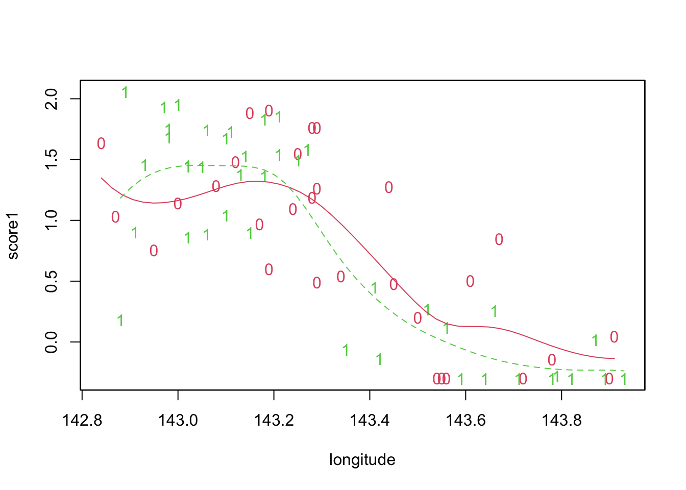

2.5 Variability bands for flexible regression
In earlier work the idea of a flexible regression curve was introduced as a means of highlighting the underlying trend in simple regression data. It is very helpful to quantify the uncertainty in these curves so that we can begin to assess which features may be simply due to random variation and which may indicate real underlying patterns. We can use our new tools to help us.
The curve estimate is simply a linear combination of the data values \(y\) and this makes it very easy to produce standard errors which quantify the variability of the curve at any value of \(x\). Unfortunately, we can’t easily produce confidence intervals for the curve because the process of ‘smoothing’ introduces some bias. However, by adding and subtracting two standard errors at each point on the curve we can produce variability bands which express the variation in the curve estimate. This can be implemented in R by adding the argument display = 'se' to the sm.regression call.

Sometime we want to compare curves, at least informally, and we can use the standard errors from each curve to do that. At any point \(x\), the standard error of the difference between the curves is \(se_d(x) = \sqrt{se_1(x)^2 + se_2(x)^2}\), where \(se_1(x)\) and \(se_2(x)\) denote the standard errors of each curve at that point. A neat trick is to plot a band whose width is \(2 se_d(x)\). By centering this band at the average of the two curves we can see where they are more than two standard errors apart. We can see this with the Reef data separated into two groups corresponding to open and closed fishing zones, by running the prepared script sm.script(trwlband).
## Test of equality : h = 0.1 p-value = 0.5691
This code actually implements a global test of the hypothesis that the two underlying curves are identical. The p-value shows that there is no evidence that the curves are different.